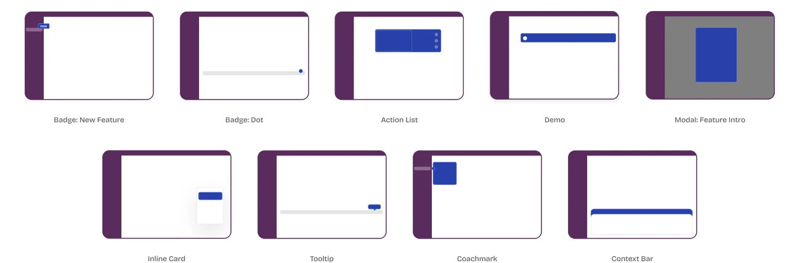
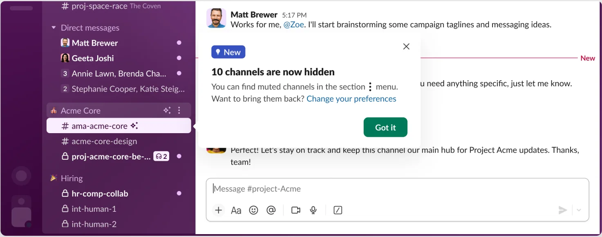
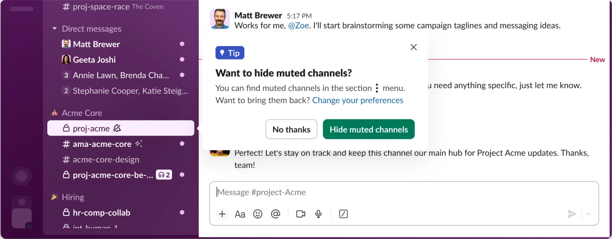
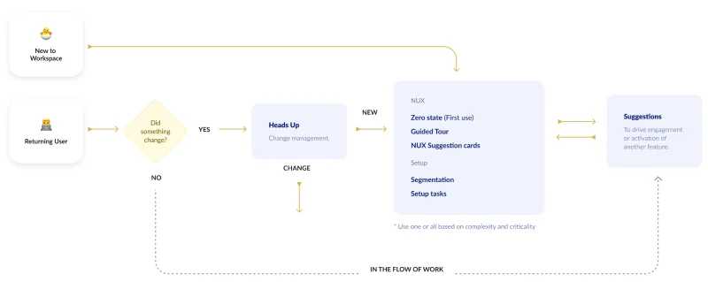
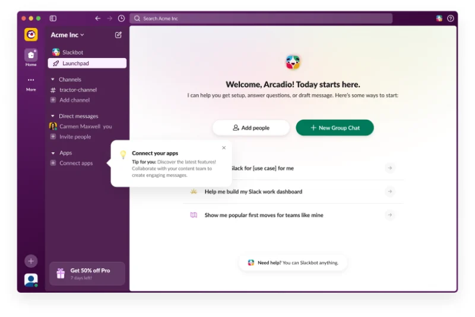
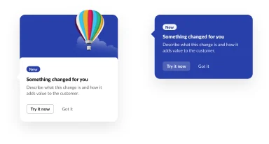
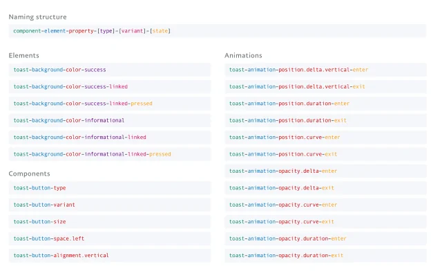
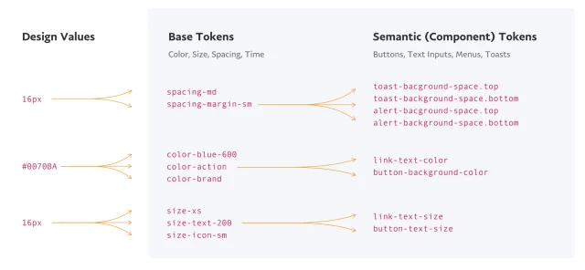
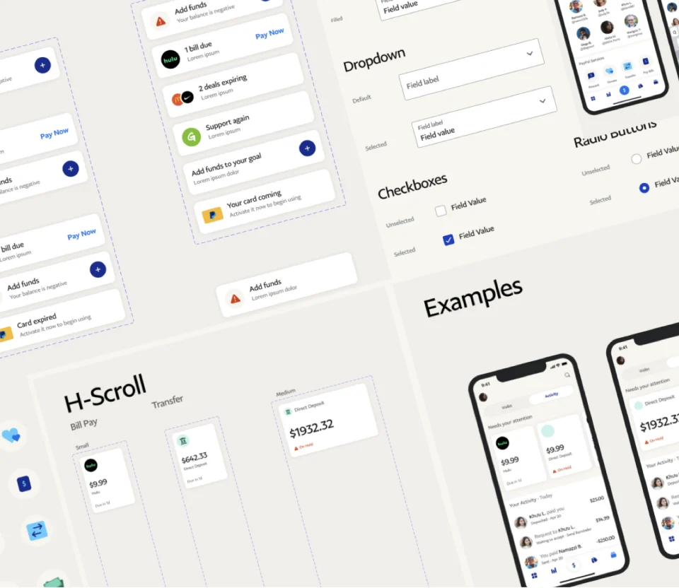

The in-product education system at Slack, and the UI token system at PayPal. Both started the same way: every team quietly building its own version of the same component.

Slack education system
Design Lead
2026
Education System
Megaphone
Slack Kit
Education Kit
Documentation
Governance
Desktop & Mobile
A design system fails quietly
Nobody files a bug when two teams ship two coachmarks. I built the fix twice — a vocabulary of raw values at PayPal, a vocabulary of moments at Slack — and the hard part was never drawing the components. It was getting them chosen.


Exhibit A: New and Tip are different jobs and near-identical objects. Teams used them interchangeably.
01
Everyone drew the same thing
Banners in one release, coachmarks in the next. Each team solved announcing a feature from scratch.
02
No rule for choosing
Nothing told a team which pattern to reach for — or whether to interrupt anyone at all.
03
Nothing stopped the pile-up
A new user could meet three of them in one session, each sure it was the most important thing on screen.
Slack · 2026
An education system on top of Megaphone
Megaphone could already decide what to show a user and when. What it had no vocabulary for was which thing to show. I led the design of that layer — the patterns, the rule for choosing, and the process for getting one built.

Entry decides the path. New users drop straight into the per-feature layer; returning users clear a Heads-Up first. Both end at Suggestions.
Five patterns, each with one job
Zero state — first-use and empty variants, each handing over one action
Zero state
The feature starts empty, before anything has been created.
Onboarding & Setup — three modal options: split hero, top hero, minimal
Onboarding & Setup
The feature needs setup before it can be used at all.
Guided Tour — one coachmark per stop, anchored to a real element, with a step counter
Guided Tour
The surface is complex or unfamiliar and needs orienting.
Heads-Up — the banner, stated plainly in past tense, with an escape hatch
Heads-Up
Something was added, moved or removed since they were last here.
Suggestions — a light-touch nudge on the context bar
Suggestions
They are set up and active, and there is more value to surface.
The per-feature patterns are optional — reach for one, or all five. What is not optional is picking deliberately.
Education components — the documented sheet: all five patterns built on Slack Kit, each with its variants and the anatomy note that carries its guidanceThe documented sheet: every pattern built on Slack Kit, with the anatomy that carries its guidance. Variants are named options, not one-offs — three ways to run an onboarding modal, two zero states.
The same patterns, in the product
Heads-Up in product — a modal announcing a notification change, with a single Got it actionHeads-Up — a notification change, stated plainly
Suggestion in product — an inline tip above the composer, dismissible, in the flow of workSuggestion — in the flow of work, dismissible
Three principles that gate the work
Is it worth interrupting them?The benefit of learning has to outweigh the cost of the interruption. Plenty of proposals should not clear this.
Lead with valueWhy this makes someone’s working life simpler — not that the feature exists.
Build it with MegaphoneSo two pieces of education can never fire at once.

Three pieces of education on one screen — only coherent because something upstream is sequencing them.
It shipped as Education Kit
Banner, coachmark, glow, modal and tag — stateless and design-agnostic, with no runtime dependency on Megaphone. Live in the webapp, in the Slack Kit Figma libraries as education variants, and documented where designers already look.

One payload, two patterns, one education colour token.
5Patterns, with one written rule for choosing between them
ShippedEducation Kit live in code and in the Slack Kit Figma libraries
1Orchestration layer — two pieces of education can no longer collide
PayPal Design System
Design Lead
2021
UI Token System
Naming Structure
Semantic Tokens
Motion Tokens
Guidelines Site
Sketch Kit
iOS · Android · Web
PayPal · 2021
A token system for a wallet being rebuilt mid-flight
A hundred markets kept shipping while the app was rebuilt into a digital wallet. The same blue existed a dozen times over, each copy with its own fate. I built the layer that gave every value one name.

component-element-property-[type]-[variant]-[state] — read left to right, a name says exactly what it touches. A name that does not parse is a name that is wrong, which turns review into reading.

A value enters once as a base token, then aliases out to the semantic tokens components consume. Change the base, every component moves — without opening one of them.

Drawn against real surfaces, not in the abstract. Every screen turned up a value the set was missing — the only reliable way to find them.Defined once on the guidelines site, drawn into the Sketch kit, emitted as JSON — then pp-components-ios, -android and pp-react built themselves from it. Motion went in the same set: curves and durations as tokens, not a spec doc.
3Tiers — design value, base token, semantic token
4Dimensions tokenised — colour, size, spacing and time
3Platform libraries — iOS, Android and web — from one JSON source
Adoption is the design problem
The components are the easy half. What decides whether a system survives a roadmap is whether a designer under deadline can find the right pattern in under a minute — and whether reaching for it beats building a bespoke one. So most of the work is naming, documentation and process. Unglamorous, and the part that compounds.